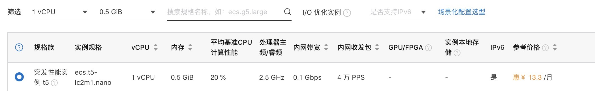

1.1.1. 使用frp代理本地机器到公网
首先购买一个最最便宜的服务器
突发性能即可(双十一大优惠更好) (我安装的是CentOS 7.2 网络按流量) 
安装docker
网上教程很多 比如:https://www.jianshu.com/p/781da23f1b37
#!/bin/sh
docker ps
if [ $? -eq 127 ];then
#docker not found
yum update -y
yum install yum-utils device-mapper-persistent-data lvm2 -y
yum-config-manager --add-repo https://download.docker.com/linux/centos/docker-ce.repo
yum install conntrack-tools -y
yum install docker-ce-18.09.1 -y
systemctl start docker
systemctl enable docker
fi
docker ps
配置镜像加速
sudo mkdir -p /etc/docker
sudo tee /etc/docker/daemon.json <<-'EOF'
{
"registry-mirrors": ["https://??.mirror.aliyuncs.com"]
}
EOF
sudo systemctl daemon-reload
sudo systemctl restart docker
服务器安装 frps server
-- 先/home/app/ 下弄好配置文件
docker run --restart=unless-stopped --net=host -v /home/app/frps:/var/frp/conf --name frps -d registry.cn-hangzhou.aliyuncs.com/change_public/frps:2.0
这里直接使用 host 方式 共享主机网路 不用每次接口暴露需要修改 配置文件 frps文件夹下 frps.ini
[common]
bind_addr = 0.0.0.0
bind_port = 7000
kcp_bind_port = 7000
vhost_http_port = 8099
vhost_https_port = 9443
dashboard_addr = 0.0.0.0
dashboard_port = 7500
dashboard_user = admin
dashboard_pwd = ?你的密码
authentication_timeout = 0
subdomain_host = frp.?.com
端口8099 或这tcp端口等需在阿里云安全组里添加映射
本地安装 frpc client
docker run -d \
--net=host \
--name frpc \
--restart unless-stopped \
-v /home/?/data/frpc/config:/var/frp/conf \
registry.cn-hangzhou.aliyuncs.com/change_public/frpc:1.0
配置demo 其他配置详情请参考frp文档 ```angular2html [common] server_addr = frp.vonchange.com server_port = 7000 admin_addr = 127.0.0.1 admin_port = 7400 admin_user = admin admin_pwd = ？
[web_gitlab] type=http local_ip = 127.0.0.1 local_port = 8099 subdomain = gitlab
[ssh_gitlab] type=tcp local_ip = 127.0.0.1 local_port = 6022 remote_port = 6022 subdomain = gitlab
[web_k8s] type=https local_ip = 127.0.0.1 local_port = 26751 subdomain = k8s
> 这里 你就可以通过域名访问 你本地的服务做需要大量资源的微服务开发或者其他(个人云存储等)
<script type="text/javascript">var targetUl = document.getElementsByClassName('page-inner')[0].getElementsByTagName('ul')[0];if(targetUl.getElementsByTagName('a').length>0){targetUl.className='toc';}</script>
```html
作者: 小白鼠V
链接: http://www.vonchange.com/doc/host/frp.html
来源: 小白鼠V技术驿站
本文原创发布于「小白鼠V技术驿站」,转载请注明出处,谢谢合作!